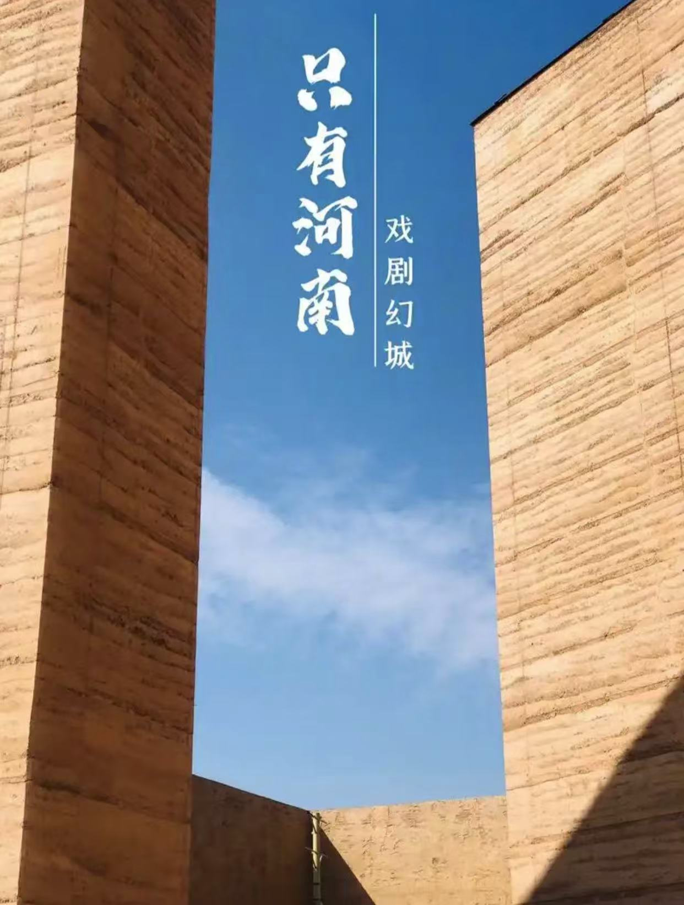
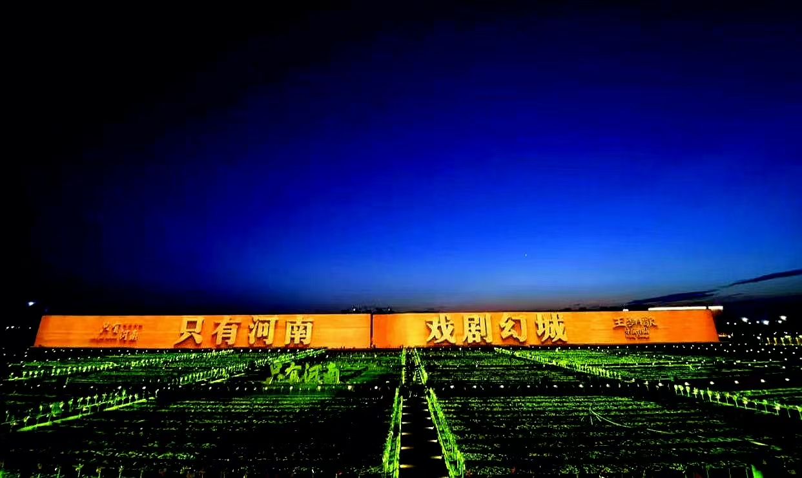
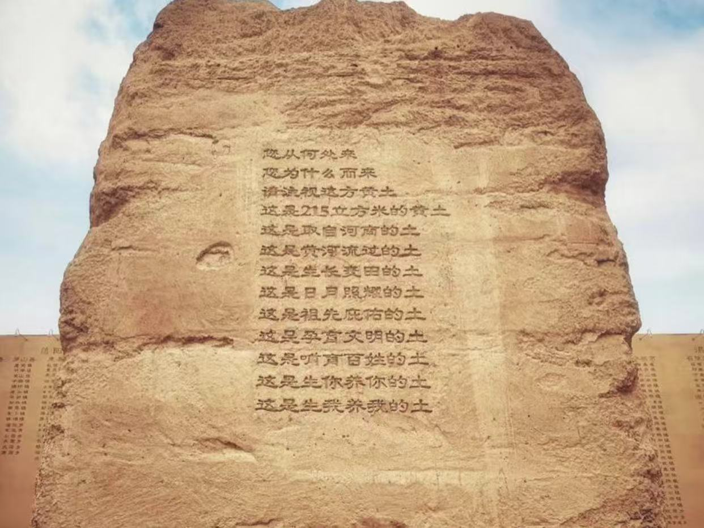
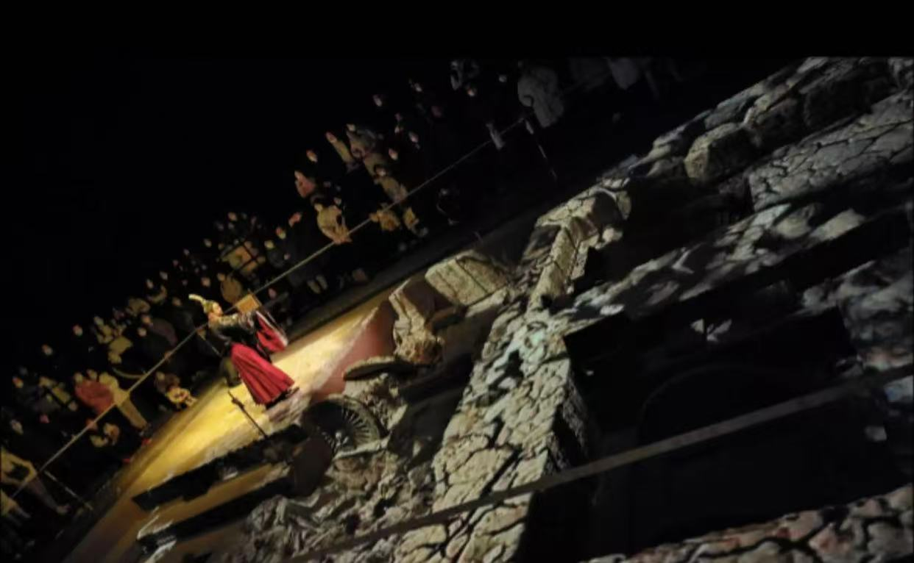

幻城戏游
——只有河南·戏剧幻城
  穿过300米长的城墙，仿佛来到了一座巨型“文化盲盒”——56个戏剧格子，藏着河南五千年的故事。触摸着刻满河南地名的墙，我们第一次直观感受到老家河南的分量。
- 《天子驾六遗址坑》——与先贤对话
-

周天子的衣袂扫过现代考古现场，那句“这些文明活着，我们就活着”的呐喊，让我们懂得：历史不是书本上的铅字，而是流淌在血脉里的基因。
- 《第七机车车辆厂礼堂》——铁路史诗
-
从二七大罢工到高铁时代，穿越七十年铁路史。当看到郑州“铁路拉来的城市”的蜕变，终于明白了课本里“交通强国”的意义。
- 《幻城剧场》——科技与文明的共舞
-
升降舞台将唐宋元明清的帝王将相“拽”到眼前，张择端在《清明上河图》里复活……光影交错间，中原文化的浩瀚如星河倾泻。